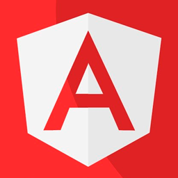

DMITRIY ENIN Junior Frontend Developer
About Me
My name is Dmitry and I am 19 years old.
I study frontend on my own and try to get better. I don't have commercial
development experience, but I hope to get it in the near future.
Worked with some backend frameworks, like express
Except javascript, I have a small experience in creating desktop programs in c#
My frontend and backend stack located just below. Just look👀
My Skills
